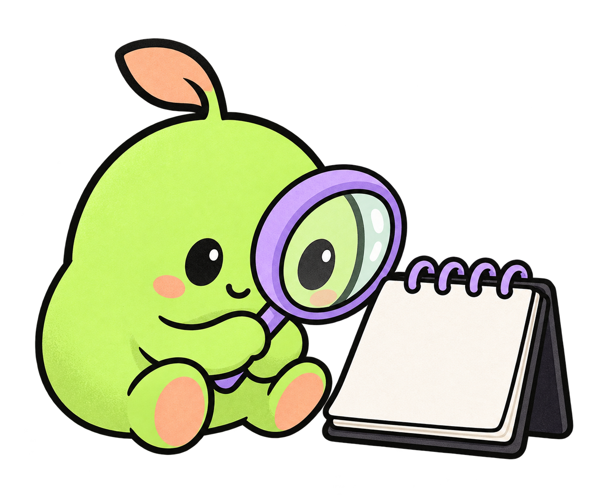

Spot concepts
The lens concept is selected. Compare the readable face and silhouette across the three compositions.
1. Lens · selected

2. Notebook · more visual detail
3. Sticker · lens dominates
Prompt set, source assets, and delivery record